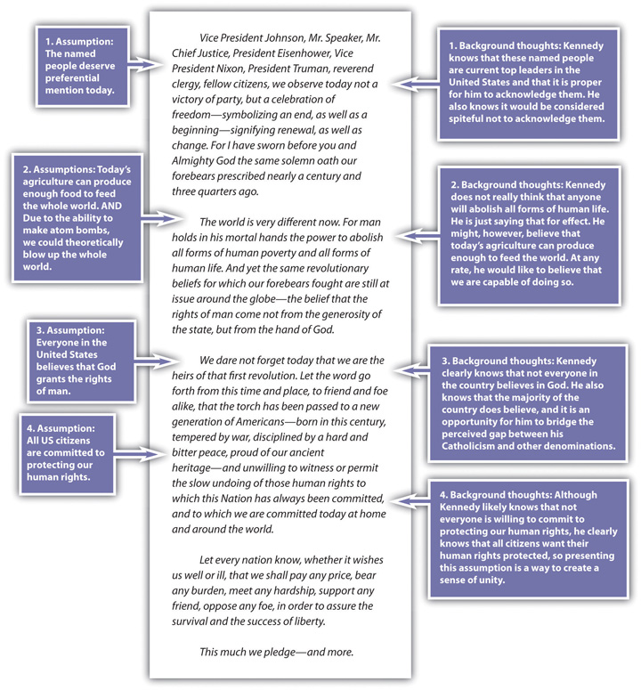

2.3 Reading a Text Carefully and Closely
Learning Objectives
- Demonstrate how to do a close reading on a selection from the Note 2.5 "Gallery of Web-Based Texts".
- Uncover the assumptions and implications of textual statements and understand how biases and preconceptions affect readers and writers.
- Show how a close reading of any statement is based on uncovering its assumptions, biases, preconceptions, and implications.
In this section, we’ll use an excerpt from one of the most famous inaugural addresses in American history, from John F. Kennedy in 1961, to demonstrate how to do a close reading by separating fact and opinion; uncovering assumptionsA belief that underlies a writer’s proposition or statement., biasesA deeply held and ingrained belief that can cloud one’s perspective as a writer or reader., and preconceptionsAn idea already held by a writer or reader in advance of making or receiving a textual statement.; and pursuing the implicationsWhat readers can infer from statements a writer makes. of textual statements. (The address is available in its entirety through the Note 2.5 "Gallery of Web-Based Texts" in Section 2.1 "Browsing the Gallery of Web-Based Texts", in text form at the Avalon Project, and in video form at the C-SPAN Video Library.)
To prepare yourself to develop a thoughtful, critical reading of a text like this, you might begin with the Twenty Questions about Self, Text, and Context from Chapter 1 "Writing to Think and Writing to Learn", filling in each blank with “Kennedy’s Inaugural Address.”
Twenty Questions about Self, Text, and Context
Self-Text Questions
- What do I think about Kennedy’s Inaugural Address?
- What do I feel about Kennedy’s Inaugural Address?
- What do I understand or what puzzles me in or about Kennedy’s Inaugural Address?
- What turns me off or amuses me in or about Kennedy’s Inaugural Address?
- What is predictable or surprises me in or about Kennedy’s Inaugural Address?
Text-Context Questions
- How is Kennedy’s Inaugural Address a product of its culture and historical moment?
- What might be important to know about the creator of Kennedy’s Inaugural Address?
- How is Kennedy’s Inaugural Address affected by the genre and medium to which it belongs?
- What other texts in its genre and medium does Kennedy’s Inaugural Address resemble?
- How does Kennedy’s Inaugural Address distinguish itself from other texts in its genre and medium?
Self-Context Questions
- How have I developed my aesthetic sensibility (my tastes, my likes, and my dislikes)?
- How do I typically respond to absolutes or ambiguities in life or in art? Do I respond favorably to gray areas or do I like things more clear-cut?
- With what groups (ethnic, racial, religious, social, gendered, economic, nationalist, regional, etc.) do I identify?
- How have my social, political, and ethical opinions been formed?
- How do my attitudes toward the “great questions” (choice vs. necessity, nature vs. nurture, tradition vs. change, etc.) affect the way I look at the world?
Self-Text-Context Questions
- How does my personal, cultural, and social background affect my understanding of Kennedy’s Inaugural Address?
- What else might I need to learn about the culture, the historical moment, or the creator that produced Kennedy’s Inaugural Address in order to more fully understand it?
- What else about the genre or medium of Kennedy’s Inaugural Address might I need to learn in order to understand it better?
- How might Kennedy’s Inaugural Address look or sound different if it were produced in a different time or place?
- How might Kennedy’s Inaugural Address look or sound different if I were viewing it from a different perspective or identification?
Note that most of these questions can’t be answered until you’ve made a first pass through the text, while others almost certainly require some research to be answered fully. It’s almost a given that multiple readings will be required to fully understand a text, its context, and your orientation toward it.
In the first annotation, let’s consider Roger (Student A) and Rhonda (Student B), both of whom read the speech without any advance preparation and without examining their biases and preconceptions. Take a look at the comment boxes attached to the excerpt of the first five paragraphs of Kennedy’s Inaugural Address.
Roger does not have any problem with a lack of separation between church and state. Rhonda is unwilling to accept any reference to God in any government setting. Should Roger at least recognize the rationale for separating church and state? Should Rhonda recognize that while the founders of this country called for such a separation, they also made repeated reference to God in their writings?
Perhaps both Roger and Rhonda should consider that Kennedy’s lofty goal of eliminating poverty was perhaps an intentional rhetorical overreach, typical of inaugural addresses, meant to inspire the general process of poverty elimination and not to lay out specific policy.
Roger sees war as a necessary evil in the search for peace. Rhonda sees war as an unacceptable evil that should never be used as a means to an end. To hear what Kennedy is saying, Roger probably needs to consider options other than war and Rhonda probably needs to recognize that history has shown some positive results from “necessary” wars.
If Roger and Rhonda want to be critical thinkers or even if they want have a meaningful conversation about the text, they must think through and past their own personal biases and preconceptions. They must prepare themselves to be critical readers.
In the next set of annotations, let’s look at what you could do with the text by making several close readings of it, while also subjecting it to the preceding Twenty Questions. Perhaps your first annotation could simply be designed to separate statements of verifiable fact from those of subjective opinion.
A careful reader who looks for assumptions and implications of statements will find plenty of them. For example, the beginning of Kennedy’s Inaugural Address includes many assumptions. In your second annotation, you might go on to target some of these assumptions and offer background thoughts that help you identify and understand these assumptions.

Just as you must try to trace a statement back to its underlying assumptions, you must also try to understand what a statement implies. Even when different readers are looking at the same text, they can sometimes disagree about the implications of a statement. Their disagreements often form the basis for their divergent opinions as readers.
Take Kennedy’s assumption that the named people at the beginning of his speech deserve preferential attention. Here are some possible implications of the statement you could come up with that result from that single assumption:
- People who voted for Nixon are reminded that their candidate did not get elected, which makes these people angry all over again.
- People who voted for Nixon feel somewhat comforted knowing that Nixon and Eisenhower are being recognized at the inauguration, and they are pleased that Kennedy is acknowledging them.
- Supporters of Kennedy hear his recognition of Nixon and Eisenhower as an acceptance of them, and thus they look more favorably on members of the opposing party.
- Supporters of Johnson appreciate that Kennedy mentions him first and believe that he is giving the most respect of all to Johnson.
- Those concerned about the relative youth of this new president appreciate the deference he shows to tradition by making this rhetorical gesture of salutation.
- Those suspicious of the power of the executive branch might wonder why Kennedy addresses the former presidents and vice president by name but gives only the title of the Supreme Court chief justice and the Speaker of the House.
You could add more to this list of possible implications, but notice how much you’ve done with the first paragraph of the speech already, simply by slowing down your critical reading process.
Key Takeaways
- Virtually any statement carries a set of assumptions (what the writer or speaker assumes in order to make the statement) and implications (what the statement implies to readers or listeners).
- You need to be able to recognize biases and preconceptions in others and in yourself so you can form your ideas and present them responsibly.
Exercises
- Apply some of the critical thinking methods outlined in this section to another presidential inaugural address. For a complete collection, check out the Avalon Project in the Note 2.5 "Gallery of Web-Based Texts" at the beginning of the chapter. Click on “Inaugural Addresses of the Presidents” in the main directory. Videos of all inaugural addresses since Truman’s in 1948 can be found at the C-Span Video Library.
- Presidential inaugural addresses, having developed over more than two centuries, follow a certain set of unspoken rules of a highly traditional genre. After looking at three to five other examples of the genre besides Kennedy’s, list at least five things most inaugural addresses are expected to accomplish. Give examples and excerpts of those generic conventions from the three to five other texts you choose. Or try this exercise with other regularly scheduled, ceremonial addresses like the State of the Union.
- Watch at least one hour apiece of prime-time cable news on the Fox News Channel and MSNBC (preferably the same hour or at least the same night of coverage). Catalogue the biases, preconceptions, assumptions, and implications of the news coverage and commentary on the same topic during those two hours. If guest “experts” are interviewed, discuss their political ideologies as well.